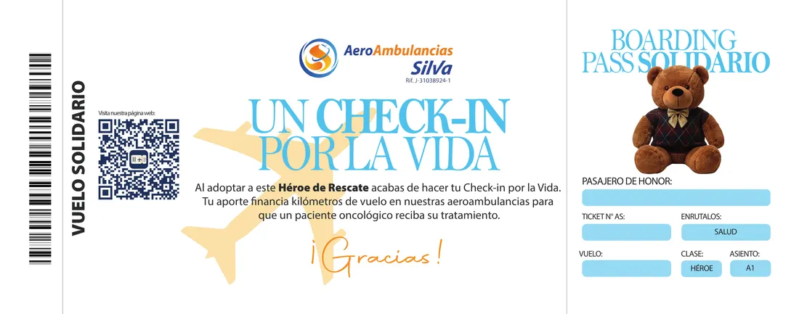
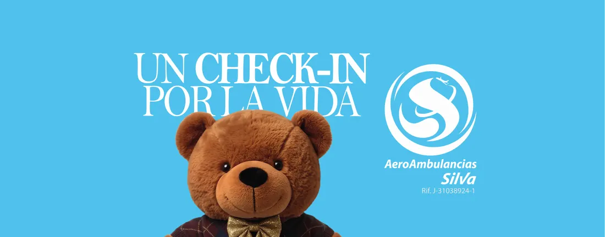

Tu Boarding Pass solidario
Boarding Pass solidario
Falta activación
Ruta ONCO 001
MaracaiboOrigen
CaracasDestino
Pasajero—
- N.º de pase
- —
- Estado
- Preparando
Busca tu Boarding Pass
Escribe el teléfono con el que te registraste y lo recuperamos.
La ruta se completó
Gracias. Tu Héroe de Rescate ayudó a que esta ruta despegara.
Activa tu Boarding Pass


Tu Héroe de Rescate viene con un código. Escríbelo aquí y tu pase queda listo, con tu nombre y tu ruta.
¿Todavía no tienes uno? y te lo enviamos por WhatsApp.
Este es el pase que vino con tu Héroe de Rescate. El tuyo, con tu nombre, está arriba.
Tu aporte
Los 609 Héroes de esta ruta pagan un vuelo completo de Maracaibo a Caracas, con tripulación médica a bordo.
- Selección
- Los pacientes llegan a través de fundaciones oncológicas regionales, que hacen la selección y el seguimiento médico.
- Transparencia
- Cada aporte es la compra formal de la ruta aeromédica, con factura, del servicio ordinario de Aeroambulancias Silva.
El oncovuelo
Estamos reuniendo los Héroes de Rescate de esta ruta.
Activa tu Boarding Pass y esta ruta pasa a ser tuya.
- Reuniendo HéroesCada adopción suma horas de vuelo
- Pacientes asignadosSe define quién viaja en esta ruta
- En vueloLa ruta está en el aire
- LlegaronLos pacientes están en su tratamiento
Próximo pasoCuando se complete la meta, despega.
Ya somos 44 pasajeros de honor
Faltan 565 para completar la ruta
Tus misiones
0 de 4
Estas son las misiones de la ruta. Se abren cuando actives tu Boarding Pass con el código que viene con tu Héroe de Rescate.
Cada una acerca la ruta a despegar.
Tu código de tripulación
Quien entre con este código viaja contigo. Puedes dictarlo por teléfono o compartir tu enlace.
—
Tu código ya funciona: puedes repartirlo desde ahora, quien entre con él queda contigo, y lo que traigas cuenta para tu lugar en el Top 4 aunque todavía no hayas activado tu Boarding Pass.
¿Alguien te invitó a sumarte? Escribe su código: así esa persona recibe el reconocimiento de haberte traído.
Llegaste por la invitación de alguien, y ya quedó anotado. Gracias por sumarte a su tripulación.
¿Te avisamos cuando despegue?
Una notificación cuando tu ruta cambie de etapa —y otra cuando llegue—. Nada más: ni promociones, ni recordatorios, ni nada que no sea este vuelo.
Top 4 oncoaliados
Personas que trajeron a otras, y esas otras adoptaron su Héroe de Rescate.
Suma otro Héroe
Elige lo que quieras y te abrimos WhatsApp con el pedido ya escrito.
Total $0
La red completa
Esta es la Ruta 1. Faltan cinco por financiar.
- Ruta 1 · OccidenteSVMC SVCSMaracaibo Caracas
- Ruta 2 · AndinaSVSO SVCSSanto Domingo del Táchira Caracas
- Ruta 3 · Llano CentralSVBI SVCSBarinas Caracas
- Ruta 4 · Llano SurSVPA SVCSPuerto Ayacucho Caracas
- Ruta 5 · SurSVPR SVCSPuerto Ordaz Caracas
- Ruta 6 · OrienteSVGI SVCSGüiria Caracas
Para empresas y RSE
Financiamiento de Rutas Sanitarias con retorno reputacional e impacto ESG.
Quién vuela esta ruta
- Más de 80 añosde historia
- ACLS / BLSpersonal certificado
- LifeportUCI de altura
- 24 horascoordinación médica
¿Algo no cuadra con tu pase?
Guárdalo en tu teléfono
Ábrelo como una aplicación, sin buscar el enlace cada vez.
- Toca Compartir en la barra de abajo.
- Desliza y elige Agregar a inicio.
- Toca Agregar.
Esta app se guarda en el teléfono. Ábrela desde tu celular para tenerla a mano como una aplicación.
Hay una versión nueva.